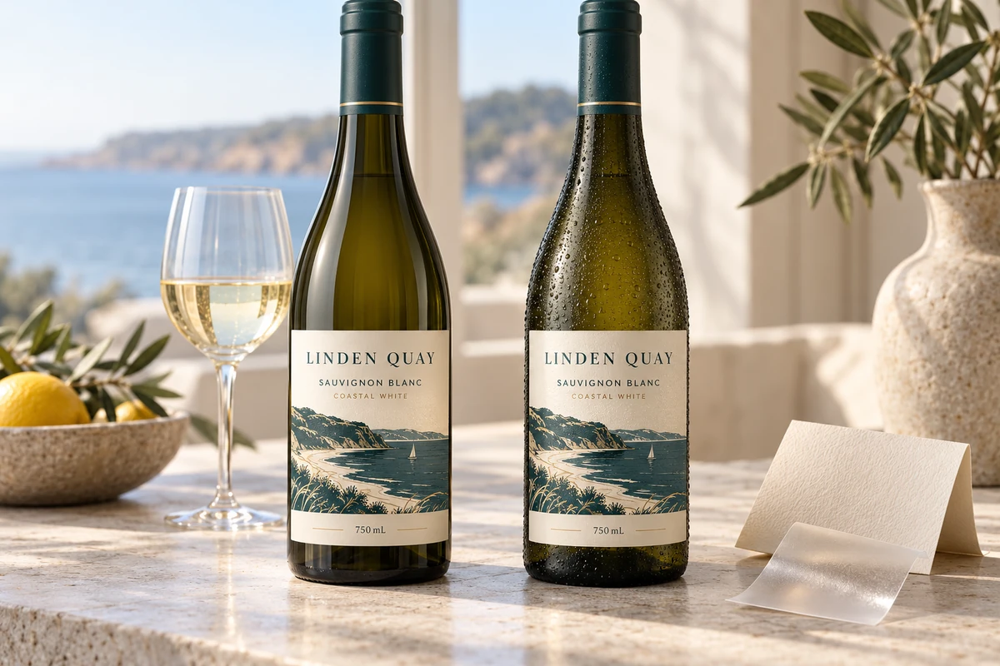

Compare complete wet-service constructions
Start with the required package appearance and the actual exposure, then ask suppliers to identify the complete construction behind each candidate. A paper-versus-film comparison is incomplete when the adhesive, printed protection and sample preparation remain unnamed.
| Comparison field | Candidate A | Candidate B |
|---|---|---|
| Face material | Specific reference and intended appearance | Specific reference and intended appearance |
| Adhesive | Exact proposed reference and application limits | Exact proposed reference and application limits |
| Printed finish | Ink/protective finish and relevant decoration | Identify differences from A |
| Bottle and contact | Actual substrate, surface condition and labeling stage | State whether the trial matches |
| Wet route | Condensation, wiping, splash or immersion actually required | Same agreed route, or mark the gap |
| Acceptance evidence | Sample identity, observation record and decision owner | Equivalent scope, not just a material description |
An illustrative premium white wine may need a tactile paper appearance and occasional chilled handling. Another service route may involve extended ice-bucket contact and repeated handling. Neither statement alone selects a stock. Ask which complete sample represents each route and what acceptable appearance means after the agreed exposure. Do not substitute a short splash for immersion or claim that all film constructions perform alike.
Keep the dry appearance reference and the functional sample record connected but distinct. If a protective finish changes the paper's feel or color, the brand has another appearance decision. If a different adhesive is proposed beneath the same printed paper, the earlier photo does not establish unchanged performance.
UPM's current label-material overview describes face material, adhesive and liner as a combination. It is supplier context, not evidence that this website supplies a named product. For the specific immersion discussion use the wine ice-bucket material guide; for reviewing sample-to-production differences use the waterproof bottle sample checklist. This comparison record joins those decisions to a purchasing specification without promising a result that has not been tested.
Common bottle label failures and fixes
| Problem | Likely cause | Production fix to review |
|---|---|---|
| Label peels at the edge | Adhesive does not match moisture, bottle curve or application temperature. | Test permanent moisture-resistant adhesive and reduce width if the label wraps too far around the curve. |
| Ink smears or bleeds | Unprotected print or paper face material under water or condensation. | Use film material, lamination, varnish or wet-strength paper based on the desired finish. |
| Wrinkles on a bottle | Label is too large for a tapered or curved surface. | Measure bottle diameter at top, middle and bottom; use a narrower label or shaped die-cut. |
| Bubbles after chilling | Moisture, temperature change or incomplete contact at application. | Confirm dry surface, application method, pressure and storage condition before bulk production. |
| Barcode will not scan | Poor contrast, curved placement or glossy reflection. | Move barcode to a flatter area, keep quiet zones and test print contrast before approval. |
Beverage labels vs wine labels
| Project type | Common material direction | Buyer notes |
|---|---|---|
| Juice and cold drink bottles | White BOPP, clear BOPP or PET | Strong fit for condensation, refrigeration and bright color printing. |
| Soda and sparkling beverage bottles | Film roll labels with gloss or matte finish | Review bottle curve, pressure handling, front/back sets and roll direction. |
| Cans | BOPP wrap labels or shrink sleeve direction by project | Confirm can diameter, label height, overlap and application equipment. |
| Premium red wine | Textured paper, wet-strength paper or foil finish | Often prioritizes tactile shelf appeal; moisture review still matters for shipping and handling. |
| Chilled white, sparkling wine or ice bucket use | Wet-strength paper, BOPP or PET with suitable adhesive | Ask for wet handling review before approving a premium paper look. |
What to send before asking for waterproof label pricing
- Bottle or can photo, including the side curve and any tapered area.
- Container diameter, label width, label height and desired front/back placement.
- Storage condition: shelf, refrigerator, cooler, ice bucket, wet hands or outdoor event use.
- Application method: hand labeling, dispenser, semi-auto machine or production line.
- Material preference: white film, clear film, textured paper, metallic finish or foil detail.
- Roll direction, core size and label gap if a labeler will be used.
- Artwork file and any legal or barcode information that must stay readable.
Recommended spec for a cold bottle proof
FAQ
Is BOPP better than paper for beverage labels?
BOPP is usually stronger for moisture and condensation. Paper can still work for dry shelf use or premium wine projects, but chilled or wet use needs wet-strength paper or another reviewed option.
Can a clear label look good on glass bottles?
Yes. Clear BOPP or PET can create a no-label look on glass bottles, but artwork contrast matters. White ink, dark text and label edge visibility should be checked in proof.
Do wine bottle labels need to survive an ice bucket?
Not every wine project needs ice bucket performance. If the bottle will be chilled, used for white wine, sparkling wine, event service or export humidity, ask for a wet handling review before choosing material.
Send the unresolved specification question
Include bottle photos, complete construction proposals, intended wet route, label dimensions, quantities and missing comparison evidence.
Prepare a label specification inquiry. The contact form opens an email draft; review it and use the listed email or WhatsApp route for attachments. Available construction, sample scope, pricing and timing require confirmation for the actual job.